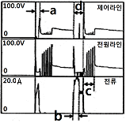

자동차정비기능사 (2014-04-06 기출문제)
1과목: 자동차공학
1. 실린더 내경이 50mm, 행정이 100mm인 4실린더 기관의 압축비가 11일 때 연소실 체적은?
- 약 40.1cc
- 약 30.1cc
- 약 15.6cc
- 약 19.6cc
(정답률: 47%)

2. 4행정 6기통 기관에서 폭발순서가 1-5-3-6-2-4인 엔진의 2번 실린더가 흡기행정 중간이라면 5번 실린더는?
- 폭발행정 중
- 배기행정 초
- 흡기행정 중
- 압축행정 말
(정답률: 68%)
3. 공회전 속도조절 장치라 할 수 없는 것은?
- 전자 스로틀 시스템
- 아이들 스피드 액추에이터
- 스텝 모터
- 가변 흡기제어 장치
(정답률: 59%)
4. 석유를 사용하는 자동차의 대체에너지에 해당 되지 않는 것은?
- 알콜
- 전기
- 중유
- 수소
(정답률: 66%)
5. 직접고압 분사방식(CRDI) 디젤엔진에서 예비분사를 실시하지 않는 경우로 틀린 것은?
- 엔진 회전수가 고속인 경우
- 분사량이 보정제어 중인 경우
- 연료 압력이 너무 낮은 경우
- 예비 분사가 주 분사를 너무 앞지르는 경우
(정답률: 49%)
6. 가솔린 기관에서 완전연소 시 배출되는 연소가스 중 체적비율로 가장 많은 가스는?
- 산소
- 이산화탄소
- 탄화수소
- 질소
(정답률: 53%)
7. 디젤기관에서 과급기의 사용 목적으로 틀린 것은?
- 엔진의 출력이 증대된다.
- 체적효율이 작아진다.
- 평균유효압력이 향상된다.
- 회전력이 증가한다.
(정답률: 81%)
8. 자동차 기관의 크랭크축 베어링에 대한 구비조건으로 틀린 것은?
- 하중 부담 능력이 있을 것
- 매입성이 있을 것
- 내식성이 있을 것
- 내 피로성이 작을 것
(정답률: 60%)
9. 배기가스 재순환장치는 주로 어떤 물질의 생성을 억제하기 위한 것인가?
- 탄소
- 이산화탄소
- 일산화탄소
- 질소산화물
(정답률: 82%)
10. LPG 기관에서 액체를 기체로 변화시키는 것을 주 목적으로 설치된 것은?
- 솔레노이드 스위치
- 베이퍼라이저
- 봄베
- 기상 솔레노이드 밸브
(정답률: 82%)
11. 실린더 내경 75mm, 행정 75mm, 압축비가 8:1인 4 실린더 기관의 총 연소실 체적은?
- 약 239.3cc
- 약 159.3cc
- 약 189.3cc
- 약 318.3cc
(정답률: 57%)
12. 자동차기관의 기본 사이클이 아닌 것은?
- 역 브레이튼 사이클
- 정적 사이클
- 정압 사이클
- 복합 사이클
(정답률: 87%)
13. 밸브 스프링의 서징현상에 대한 설명으로 옳은 것은?
- 밸브가 열릴 때 천천히 열리는 현상
- 흡ㆍ배기 밸브가 동시에 열리는 현상
- 밸브가 고속 회전에서 저속으로 변화할 때 스프링의 장력의 차가 생기는 현상
- 밸브스프링의 고유 진동수와 캠 회전수가 공명에 의해 밸브스프링이 공진하는 현상
(정답률: 63%)
14. 기관이 과열하는 원인으로 틀린 것은?
- 냉각팬의 파손
- 냉각수의 흐름 저항 감소
- 라디에이터의 코어 파손
- 냉각수 이물질 혼입
(정답률: 71%)
15. 자동차의 안전기준에서 제동등이 다른 등화와 겸용하는 경우 제동조작 시 그 광도가 몇 배 이상 증가하여야 하는가?
- 2배
- 3배
- 4배
- 5배
(정답률: 70%)
16. 열선식 흡입공기량 센서에서 흡입공기량이 많아질 경우 변화하는 물리량은?
- 열량
- 시간
- 전류
- 주파수
(정답률: 54%)
17. 승용차에서 전자제어식 가솔린 분사기관을 채택하는 이유로 거리가 먼 것은?
- 고속 회전수 향상
- 유해배출가스 저감
- 연료소비율 개선
- 신속한 응답성
(정답률: 56%)
18. 기관의 총배기량을 구하는 식은?
- 총배기량 = 피스톤 단면적 × 행정
- 총배기량 = 피스톤 단면적 × 행정 × 실린더 수
- 총배기량 = 피스톤 길이 × 행정
- 총배기량 = 피스톤의 길이 × 행정 × 실린더 수
(정답률: 80%)
19. 기관의 윤활유 점도유지(viscosity index) 또는 점도에 대한 설명으로 틀린 것은?
- 온도변화에 의한 점도변화가 적을 경우 점도지수가 높다.
- 추운 지방에서는 점도가 큰 것 일수록 좋다.
- 점도지수는 온도변화에 대한 점도의 변화 정도를 표시한 것이다.
- 점도란 윤활유의 끈적끈적한 정도를 나타내는 척도이다.
(정답률: 73%)
20. 그림과 같은 커먼레일 인젝터 파형에서 주분사 구간을 가장 알맞게 표시한 것은?

- a
- b
- c
- d
(정답률: 57%)
2과목: 자동차정비 및 안전기준
21. 산소센서에 대한 설명으로 옳은 것은?
- 농후한 혼합기가 연소된 경우 센서 내부에서 외부 쪽으로 산소 이온이 이동한다.
- 산소센서의 내부에는 배기가스와 같은 성분의 가스가 봉입되어져 있다.
- 촉매 전, 후의 산소센서는 서로 같은 기전력을 발생하는 것이 정상이다.
- 광역산소센서에서 히팅 코일 접지와 신호 접지 라인은 항상 0V이다.
(정답률: 59%)
22. 4행정 디젤기관에서 실린더 내경 100㎜, 행정 127㎜, 회전수 1200rpm, 도시평균 유효압력 7kg/cm2, 실린더 수가 6이라면 도시마력(ps)은?
- 약 49
- 약 56
- 약 80
- 약 112
(정답률: 53%)
23. 기관에서 블로바이 가스의 주성분은?
- N2
- HC
- CO
- NOx
(정답률: 66%)
24. 주행저항 중 자동차의 중량과 관계없는 것은?
- 구름저항
- 구배저항
- 가속저항
- 공기저항
(정답률: 61%)
25. 유압식 동력조향장치에서 안전밸브(safety check valve)의 기능은?
- 조향 조작력을 가볍게 하기 위한 것이다.
- 코너링 포스를 유지하기 위한 것이다.
- 유압이 발생하지 않을 때 수동조작으로 대처할 수 있도록 하는 것이다.
- 조향 조작력을 무겁게 하기 위한 것이다.
(정답률: 77%)
26. 수동변속기 차량에서 클러치의 필요조건으로 틀린 것은?
- 회전관성이 커야 한다.
- 내열성이 좋아야 한다.
- 방열이 잘되어 과열되지 않아야 한다.
- 회전부분의 평형이 좋아야 한다.
(정답률: 82%)
27. 조향장치에서 차륜정렬의 목적으로 틀린 것은?
- 조향 휠의 조작안정성을 준다.
- 조향 휠의 주행안정성을 준다.
- 타이어의 수명을 연장시켜준다.
- 조향 휠의 복원성을 경감시킨다.
(정답률: 70%)
28. 자동변속기에서 차속센서와 함께 연산하여 변속시기를 결정하는 주요 입력신호는?
- 캠축 포지션 센서
- 스로틀 포지션 센서
- 유온 센서
- 수온 센서
(정답률: 79%)
29. 종감속 기어의 감속비가 5:1일 때 링기어가 2회전 하려면 구동피니언은 몇 회전하는가?
- 12회전
- 10회전
- 5회전
- 1회전
(정답률: 84%)
30. 유압식 동력조향장치에서 주행 중 핸들이 한쪽으로 쏠리는 원인으로 틀린 것은?
- 토인 조정불량
- 타이어 편 마모
- 좌우 타이어의 이종사양
- 파워 오일펌프 불량
(정답률: 76%)
31. 유압식 동력조향장치에서 사용되는 오일펌프 종류가 아닌 것은?
- 베인 펌프
- 로터리 펌프
- 슬리퍼 펌프
- 벤딕스 기어 펌프
(정답률: 53%)
32. 드럼 방식의 브레이크 장치와 비교했을 때 디스크 브레이크의 장점은?
- 자기작동 효과가 크다.
- 오염이 잘 되지 않는다.
- 패드의 마모율이 낮다.
- 패드의 교환이 용이하다.
(정답률: 68%)
33. 전자제어 현가장치에서 감쇠력 제어 상황이 아닌 것은?
- 고속 주행하면서 좌회전 할 경우
- 정차 시 뒷자석에 많은 사람이 탑승한 경우
- 정차 중 급출발할 경우
- 고속 주행 중 급제동한 경우
(정답률: 73%)
34. 주행 중 브레이크 드럼과 슈가 접촉하는 원인에 해당하는 것은?
- 마스터 실린더의 리턴 포트가 열려 있다.
- 슈의 리턴 스프링이 소손되어 있다.
- 브레이크액이 양이 부족하다.
- 드럼과 라이닝의 간극이 과대하다.
(정답률: 56%)
35. 마스터 실린더의 푸시로드에 작용하는 힘이 120kgf이고, 피스톤의 면적이 4㎠일 때 유압은?
- 20 kgf/㎠
- 30 kgf/㎠
- 40 kgf/㎠
- 50 kgf/㎠
(정답률: 80%)
36. 주행 중 가속페달 작동에 따라 출력전압의 변화가 일어나는 센서는?
- 공기온도 센서
- 수온 센서
- 유온 센서
- 스로틀 포지션 센서
(정답률: 80%)
37. 전자제어 현가장치의 장점으로 틀린 것은?
- 고속 주행 시 안정성이 있다.
- 조향 시 차체가 쏠리는 경우가 있다.
- 승차감이 좋다.
- 지면으로부터의 충격을 감소한다.
(정답률: 86%)
38. 수동변속기 내부 구조에서 싱크로메시(synchro-mesh) 기구의 작용은?
- 배력 작용
- 가속 작용
- 동기치합 작용
- 감속 작용
(정답률: 64%)
39. 자동변속기에서 토크컨버터 내부의 미끄럼에 의한 손실을 최소화하기 위한 작동기구는?
- 댐퍼 클러치
- 다판 클러치
- 일방향 클러치
- 롤러 클러치
(정답률: 72%)
40. ABS(Anti-lock Brake System)의 구성 요소 중 휠의 회전속도를 감지하여 컨트롤 유닛으로 신호를 보내주는 것은?
- 휠 스피드 센서
- 하이드로릭 유닛
- 솔레노이드 밸브
- 어큐물레이터
(정답률: 83%)
3과목: 안전관리
41. 용량과 전압이 같은 축전지 2개를 직렬로 연결할 때의 설명으로 옳은 것은?
- 용량은 축전지 2개와 같다.
- 용량과 전압 모두 2배로 증가한다.
- 전압이 2배로 증가한다.
- 용량은 2배로 증가하지만 전압은 같다.
(정답률: 58%)
42. 교류 발전기 발전원리에 응용되는 법칙은?
- 플레밍의 왼손 법칙
- 플레밍의 오른손 법칙
- 옴의 법칙
- 자기포화의 법칙
(정답률: 73%)
43. 납산 축전지의 온도가 낮아졌을 때 발생되는 현상이 아닌 것은?
- 전압이 떨어진다.
- 용량이 적어진다.
- 전해액의 비중이 내려간다.
- 동결하기 쉽다.
(정답률: 55%)
44. ECU에 입력되는 스위치 신호라인에서 OFF 상태의 전압이 5V로 측정되었을 때 설명으로 옳은 것은?
- 스위치의 신호는 아날로그 신호이다.
- ECU 내부의 인터페이스는 소스(Source) 방식이다.
- ECU 내부의 인터페이스는 싱크(Sink) 방식이다.
- 스위치를 닫았을 때 2.5V이하면 정상적으로 신호처리를 한다.
(정답률: 56%)
45. 편의장치 중 중앙집중식 제어장치(ETACS 또는 ISU) 입, 출력 요소의 역할에 대한 설명으로 틀린 것은?
- INT 볼륨 스위치 : INT 볼륨 위치 검출
- 모든 도어 스위치 : 각 도어 잠김 여부 검출
- 키 리마인드 스위치 : 키 삽입 여부 검출
- 와셔 스위치 : 열선 작동 여부 검출
(정답률: 78%)
46. 브레이크등 회로에서 12V 축전지에 24W의 전구 2개가 연결되어 점등된 상태라면 합성저항은?
- 2Ω
- 3Ω
- 4Ω
- 6Ω
(정답률: 37%)
47. 에어컨 매니폴드 게이지(압력게이지) 접속 시 주의사항으로 틀린 것은?
- 매니폴드 게이지를 연결할 때에는 모든 밸브를 잠근 후 실시한다.
- 진공펌프를 작동시키고 매니폴드 게이지 센터 호스를 저압라인에 연결한다.
- 황색 호스를 진공펌프나 냉매회수기 또는 냉매 충전기에 연결한다.
- 냉매가 에어컨 사이클에 충전되어 있을 때에는 충전호스, 매니폴드 게이지 밸브를 전부 잠근 후 분리한다.
(정답률: 53%)
48. 전자제어 배전 점화 방식(DLI : Distributor less Ignition)에 사용되는 구성품이 아닌 것은?
- 파워트랜지스터
- 원심진각장치
- 점화코일
- 크랭크각센서
(정답률: 60%)
49. 반도체에 대한 특징으로 틀린 것은?
- 극히 소형이며 가볍다.
- 예열시간이 불필요하다.
- 내부 전력손실이 크다.
- 정격 값 이상이 되면 파괴된다.
(정답률: 73%)
50. 기동전동기에 많은 전류가 흐르는 원인으로 옳은 것은?
- 높은 내부저항
- 내부접지
- 전기자 코일의 단선
- 계자코일의 단선
(정답률: 51%)
51. 줄 작업에서 줄에 손잡이를 꼭 끼우고 사용하는 이유는?
- 평형을 유지하기 위해
- 중량을 높이기 위해
- 보관에 편리하도록 하기 위해
- 사용자에게 상처를 입히지 않기 위해
(정답률: 79%)
52. 일반 가연성 물질의 화재로서 물이나 소화기를 이용하여 소화하는 화재의 종류는?
- A급 화재
- B급 화재
- C급 화재
- D급 화재
(정답률: 66%)
53. 산소용접에서 안전한 작업수칙으로 옳은 것은?
- 기름이 묻은 복장으로 작업한다.
- 산소밸브를 먼저 연다.
- 아세틸렌밸브를 먼저 연다.
- 역화하였을 때는 아세틸렌밸브를 빨리 잠근다.
(정답률: 59%)
54. 기계 부품에 작용하는 하중에서 안전율을 가장 크게 하여야 할 하중은?
- 정 하중
- 교번하중
- 충격하중
- 반복하중
(정답률: 73%)
55. 공기압축기 및 압축공기 취급에 대한 안전수칙으로 틀린 것은?
- 전기배선, 터미널 및 전선 등에 접촉 될 경우
- 분해 시 공기압축기, 공기탱크 및 관로 안의 압축공기를 완전히 배출한 뒤에 실시한다.
- 하루에 한 번씩 공기탱크에 고여 있는 응축수를 제거한다.
- 작업 중 작업자의 땀이나 열을 식히기 위해 압축공기를 호흡하면 작업효율이 좋아진다.
(정답률: 83%)
56. 계기 및 보안장치의 정비 시 안전사항으로 틀린 것은?
- 엔진이 정지 상태이면 계기판은 점화스위치 ON 상태에서 분리한다.
- 충격이나 이물질이 들어가지 않도록 주의한다.
- 회로 내에 규정치보다 높은 전류가 흐르지 않도록 한다.
- 센서의 단품 점검 시 배터리 전원을 직접 연결하지 않는다.
(정답률: 85%)
57. 기관정비 시 안전 및 취급주의 사항에 대한 내용으로 틀린 것은?
- TPS, ISC Servo 등은 솔벤트로 세척하지 않는다.
- 공기압축기를 사용하여 부품세척 시 눈에 이물질이 튀지 않도록 한다.
- 캐니스터 점검 시 흔들어서 연료증발가스를 활성화 시킨 후 점검한다.
- 배기가스 시험 시 환기가 잘되는 곳에서 측정한다.
(정답률: 79%)
58. 운반기계의 취급과 안전수칙에 대한 내용으로 틀린 것은?
- 무거운 물건을 운반할 때는 반드시 경종을 울린다.
- 기중기는 규정 용량을 지킨다.
- 흔들리는 화물은 보조자가 탑승하여 움직이지 못하도록 한다.
- 무거운 것은 밑에, 가벼운 것은 위에 쌓는다.
(정답률: 86%)
59. 납산축전지 취급 시 주의사항으로 틀린 것은?
- 배터리 접속 시 (＋)단자부터 접속한다.
- 전해액이 옷에 묻지 않도록 주의한다.
- 전해액이 부족하면 시냇물로 보충한다.
- 배터리 분리 시 (-)단자부터 분리한다.
(정답률: 82%)
60. 브레이크의 파이프 내에 공기가 유입되었을 때 나타나는 현상으로 옳은 것은?
- 브레이크액이 냉각된다.
- 마스터 실린더에서 브레이크액이 누설된다.
- 브레이크 페달의 유격이 커진다.
- 브레이크가 지나치게 급히 작동한다.
(정답률: 69%)